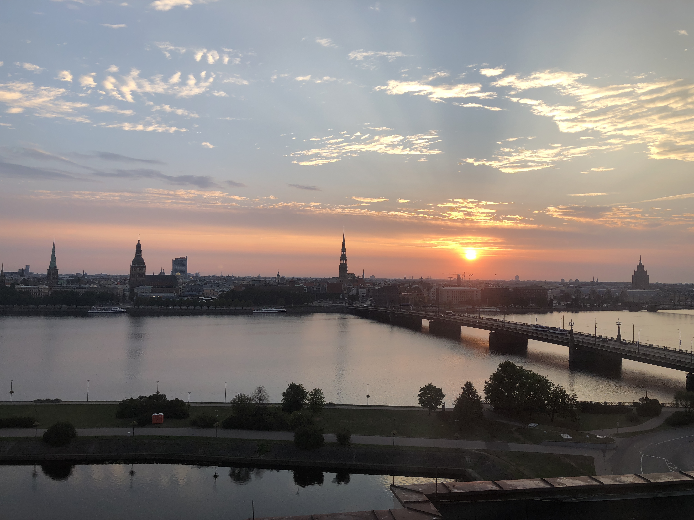

Page 4
Page 4
Riga Latvia
My first home

Riga is a city located in a North Eastern European country between Estonia and
Lithuania called Latvia and it use to be
part of the Soviet Union. The city of Riga is considered a party city in Europe. I was born in this are and lived
there for a total
of 7 years before I moved
to the United States. The photo was taken from the Radisson Daugava Hotel during sunrise in the fall of 2018. Here
you can see the
skyline of the 800 year old city with some
well known landmarks like St. Peters Cathedral located near the center of the photo, the Daugava River, and the
building on the far right which use to be a Soviet
university built during the Stalinist Era. Riga is a fun town and would recommend anyone to visit.
Table Of Contents
Back
Next